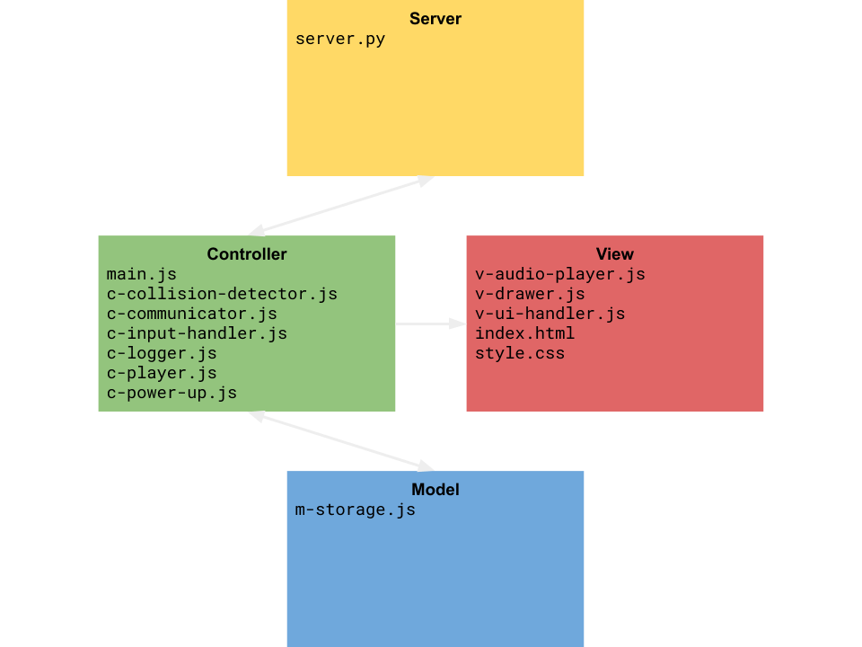

Kurve is a networked multiplayer game based on modern web technologies. The game is based on the popular DOS game 'Achtung die Kurve'. Each player can control one line using the arrow keys or a gamepad. The goal of the game is to maneuver the line without crashing into other lines or the border.

Kurve is based on two servers and multiple clients. The servers are implemented in python and the clients run in the player's browser.
The first server is a HTTP server and is responsible for the initial delivery of the files (html, js, css). It has no further tasks during the game.
The second server is a websocket server. After loading the files the clients connect to the websocket server and keep the connection open for further communication. The websocket server stores no data apart from necessary information about the currently conntected clients (for example the number of clients, or the open websocket connections). The websocket server's task is to forward messages from one client to the other clients.
The client code is separated into model, view and controller. In order to structure the code and increase mainability the client code is separated into various files, based on the responsibility of the code.
Handles the persistent storage of player statistics.
Contains the structure of the game's user interface and links all other necessary files.
Responsible for the style of the game's user interface.